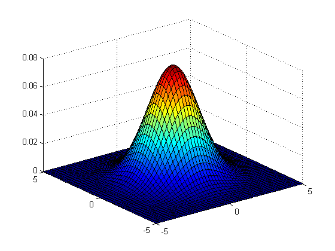
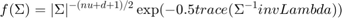
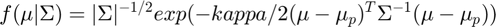

mvn2factory
Construct a reparameterized multi-variate normal distribution structure
Syntax
D = mvn2factory(datadim)
Description
D = mvn2factory(datadim) returns a structure representing a datadim-dimensional normal distribution with a special reparameterization.
Distribution Parameters
- sigmat ((datadim+1)-by-(datadim+1) matrix) : The compound mean and covariance matrix.
See also mvnfactory
Example
% Construct a bivariate normal distribution: D = mvn2factory(2); % Build a parameter structure for it: theta = struct('sigmat', [2,0,0;0,2,0;0,0,1]); % Plot the PDF: x = -5:0.2:5; y = -5:0.2:5; [X, Y] = meshgrid(x, y); data = [X(:) Y(:)]'; f = D.pdf(theta, data); surf(X, Y, reshape(f, size(X)));

name
See distribution structure common members.
Flag to control the memory usage (resulting code will be slower)
M
See distribution structure common members.
dim
See distribution structure common members.
datadim
See distribution structure common members.
main2new
Convert usual MVN parameters to reparameterized parameters
Syntax
theta = D.main2new(theta)
new2main
Convert reparameterized parameters to usual MVN parameters
Syntax
theta = D.new2main(theta)
ll
See distribution structure common members.
llvec
See distribution structure common members.
llgrad
See distribution structure common members.
llgraddata
See distribution structure common members.
cdf
See distribution structure common members.
See distribution structure common members.
sample
See distribution structure common members.
randparam
See distribution structure common members.
init
See distribution structure common members.
estimatedefault
Default estimation function for multi-variate normal distribution. This function implements the maximum likelihood method.
Syntax
theta = D.estimatedefault(data) theta = D.estimatedefault(data, options) [theta, D] = D.estimatedefault(...) [theta, D, info] = D.estimatedefault(...) [theta, D, info, options] = D.estimatedefault(...)
Description
theta = D.estimatedefault(data) returns estimated parameters for the distribution D, using data.
theta = D.estimatedefault(data, options) utilizes applicable options from the options structure in the estimation procedure.
[theta, D] = D.estimatedefault(...) also returns D, the distribution structure for which theta is applicable. (This is the same as the distribution structure D from which you called estimate, and so it should not normally be used. The purpose of including it in the output is to maintain compatibility with other estimation functions).
[theta, D, info] = D.estimatedefault(...) also returns info, a structure array containing information about successive iterations performed by iterative estimation functions.
[theta, D, info, options] = D.estimatedefault(...) also returns the effective options used, so you can see what default values the function used on top of the options you possibly specified.
For information about the output theta, see Distribution Parameters Structure. The input argument data is described in Data Input Argument to Functions. You may also want to read about options or info arguments.
Available Options
Currently no options are available for this function.
Returned info fields
The method used is not iterative and so the returned info is empty.
Example
% create a Gaussian distribution D = mvn2factory(1); % generate 1000 random data points data = randn(1,1000) .* 2 + 1; % estimate distribution parameters to fit the data theta = D.estimatedefault(data)
penalizerparam
See distribution structure common members.
Penalizer Info
The default penalizer for this distribution is the Inverse-Wishart distribution for covariance and Normal distribution for mean
Inverse-Wishart prior on covariance has the following form:

where
- nu (scalar) : Degrees of freedom.
- invLambda (datadim-by-datadim matrix) : The inverse scale matrix.
Normal prior on the mean has the following form:

where
- mu_p (datadim-by-1 vector) : The mean vector.
- kappa (scalar) : the shrinkage parameter
penalizercost
See distribution structure common members.
penalizergrad
See distribution structure common members.
sumparam
See distribution structure common members.
scaleparam
See distribution structure common members.
sumgrad
See distribution structure common members.
scalegrad
See distribution structure common members.
entropy
See distribution structure common members.
kl
See distribution structure common members.
AICc
See distribution structure common members.
BIC
See distribution structure common members.
display
See distribution structure common members.
selfsplit
See distribution structure common members.
selfmerge
See distribution structure common members.